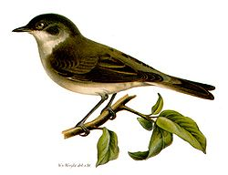
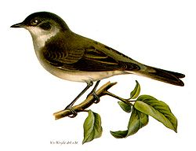

| Lesser Whitethroat | |
|---|---|
|  | |
| Painting of Lesser Whitethroat. This is not a typical representation and actually more similar to Hume's Whitethroat |
|
| Conservation status | |
| Binomial name | |
| Sylvia curruca (Linnaeus, 1758, southern Sweden) |
| Lesser Whitethroat | |
|---|---|
|  | |
| Painting of Lesser Whitethroat. This is not a typical representation and actually more similar to Hume's Whitethroat |
|
| Conservation status | |
| Binomial name | |
| Sylvia curruca (Linnaeus, 1758, southern Sweden) |
The Lesser Whitethroat, Sylvia curruca, is a common and widespread typical warbler which breeds in temperate Europe, except the southwest, and in western and central Asia. This small passerine bird is strongly migratory, wintering in Africa just south of the Sahara, Arabia and India.
Unlike many typical warblers, the sexes are almost identical. This is a small species with a grey back, whitish underparts, a grey head with a darker "bandit mask" through the eyes and a white throat. It is slightly smaller than the Whitethroat, and lacks the chestnut wings and uniform head-face color of that species. The Lesser Whitethroat's song is a fast and rattling sequence of tet or che calls, quite different from the Whitethroat's scolding song.
Like most "warblers", it is insectivorous, but will also take berries and other soft fruit. This is a bird of fairly open country and cultivation, with large bushes for nesting and some trees. The nest is built in low shrub or brambles, and 3-7 eggs are laid.

{kind=link}
_at_Bharatpur_I_IMG_5246.jpg){kind=link}